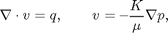
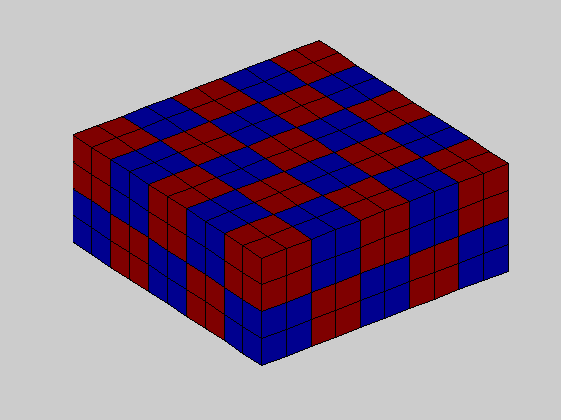
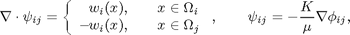
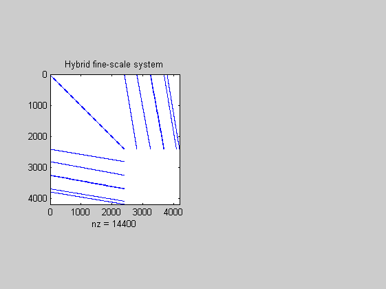
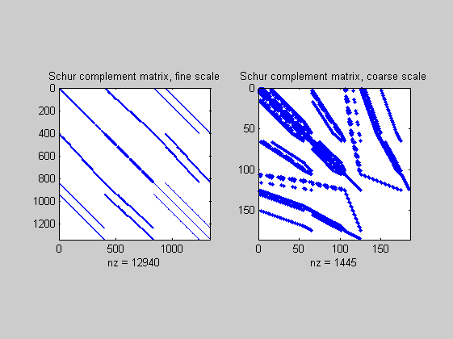

Multiscale Pressure Solver: Flow Driven by Dirichlet and Neumann Boundary Conditions
Compare the fine-grid and the multiscale pressure solver by solving the single-phase pressure equation

for a Cartesian grid with lognormal, anisotropic permeability. This example is built upon simpleBC.html.
Contents
Define and visualize the model
We construct the Cartesian grid, set a lognormal anisotropic permeability with mean equal [1000 100 10] mD, and use the default single-phase fluid with unit viscosity
verbose = true; nx = 10; ny = 10; nz = 4; Nx = 5; Ny = 5; Nz = 2; G = cartGrid([nx, ny, nz]); G = computeGeometry(G); K = logNormLayers([nx, ny, nz], 1); K = 100 * K / mean(K(:)); rock.perm = bsxfun(@times, [10, 1, 0.1], K .* milli()*darcy()); fluid = initSingleFluid(); gravity off % Set boundary conditions: a flux of 1 m^3/day on the global left-hand % side Dirichlet boundary conditions p = 0 on the global right-hand side of % the grid, respectively. bc = fluxside([], G, 'LEFT', 1:ny, 1:nz, 1*meter()^3/day()); bc = pside (bc, G, 'RIGHT', 1:ny, 1:nz, 0 ); % After the grid structure is generated, we plot the permeability and the % geometry figure; plotCellData(G,log10(rock.perm(:,1)) ); shading faceted; title('Log_{10} of x-permeability [mD]'); view(3), camproj perspective, axis tight off h = colorbar; c = round(caxis); c = c(1) : c(2); set(h, 'YTick', c, 'YTickLabel', num2str(10.^c' ./ (milli()*darcy())));

Partition the grid
We partition the fine grid into a regular Nx-by-Ny-by-Nz coarse grid in index space so that each coarse block holds (nx/Nx)-by-(ny/Ny)-by-(nz/Nz) fine cells. The resulting vector p has one entry per fine-grid cell giving the index of the corresponding coarse block. After the grid is partitioned in index space, we postprocess it to make sure that all blocks consist of a connected set of fine cells. This step is superfluous for Cartesian grids, but is required for grids that are only logically Cartesian (e.g., corner-point and other mapped grids that may contain inactive or degenerate cells).
p = partitionUI(G, [Nx, Ny, Nz]); p = processPartition(G, p, 'Verbose', verbose); % Plot the partition figure; plotCellData(G,mod(p,2)); shading faceted; view(3); axis equal tight off;
Elapsed time is 0.064037 seconds.
Having obtain a partitioning in which each coarse block is a connected collection of cells from the fine grid, we build the coarse-grid structure, which is quite similar to that of the fine grid
CG = generateCoarseGrid(G, p, 'Verbose', verbose);
display(CG); disp(CG.cells); disp(CG.faces);
Generating coarse grid ... Elapsed time is 0.004278 seconds.
CG =
cells: [1x1 struct]
faces: [1x1 struct]
cellFaces: [300x2 int32]
num: 50
subCells: [400x50 logical]
num: 195
neighbors: [195x2 uint32]
tag: [195x1 int32]
Assemble linear systems
First we assemble the linear system for the fine-scale equations
S = assembleMimeticSystem(G, rock, 'Verbose', verbose);
display(S);
Using inner product: 'ip_simple'.
Computing component matrices C and D ... Elapsed time is 0.000735 seconds.
Computing cell inner products ... Elapsed time is 0.031358 seconds.
Assembling global inner product matrix ... Elapsed time is 0.000612 seconds.
S =
C: [2400x400 double]
D: [2400x1380 double]
BI: [2400x2400 double]
ip: 'ip_simple'
type: 'hybrid'
sizeB: [2400 2400]
sizeC: [2400 400]
sizeD: [2400 1380]
We generate the coarse-scale system by solving local flow problems,

one for each interface in the coarse grid. The basis functions for velocity and pressure are stored in two matrices. Unlike the fine-grid system, the B part of the hybrid system is not formed explicitly as a matrix block but constructed as a matrix product in our flow solver:
![$$ A x = \left[\begin{array}{ccc} \Psi^T B_f\Psi & C & D \\ C' & 0 & 0 \\ D' & 0 & 0 \end{array}\right] \left[\begin{array}{c} v \\ \textbf{--}p \\ \lambda \end{array}\right] = [\mbox{RHS}] = b, $$](simpleBCMS_eq67248.png)
where B_f is the fine-scale B-block and \Psi contains the basis functions. In the structure, we store B\Psi rather than \Psi
CS = generateCoarseSystem(G, rock, S, CG, ones([G.cells.num, 1]), ... 'Verbose', verbose, 'bc', bc); display(CS);
Computing flux and pressure basis functions... Elapsed time is 0.327776 seconds.
CS =
C: [300x50 double]
D: [300x195 double]
basis: {195x1 cell}
basisP: {195x1 cell}
basisWeighting: 'perm'
activeFaces: [125x1 double]
activeCellFaces: [230x1 double]
type: 'hybrid'
sizeB: [300 300]
sizeC: [300 50]
sizeD: [300 195]
The linear hybrid system for the coarse-scale equations has a similar structure as the corresponding fine-scale system, but with significantly fewer unknowns.
fm = figure; subplot(1,2,1), spy([S.BI , S.C , S.D ; ... S.C', zeros(S.sizeC(2), S.sizeC(2) + S.sizeD(2)); ... S.D', zeros(S.sizeD(2), S.sizeC(2) + S.sizeD(2))]); title('Hybrid fine-scale system') %{ subplot(1,2,2), spy([CS.basis'*S.BI*CS.basis , CS.C , CS.D ; ... CS.C', zeros(CS.sizeC(2), CS.sizeC(2) + CS.sizeD(2)); ... CS.D', zeros(CS.sizeD(2), CS.sizeC(2) + CS.sizeD(2))]); title('Hybrid coarse-scale system'); %}
Solve the global flow problems
[xrRef, xwRef] = solveIncompFlow (initResSol(G, 0.0), ... initWellSol([], 0.0), ... G, S, fluid, ... 'bc', bc, 'MatrixOutput',true); [xrMs , xwMs ] = solveIncompFlowMS(initResSol(G, 0.0), ... initWellSol([], 0.0), ... G, CG, p, S, CS, fluid, ... 'bc', bc, 'MatrixOutput',true, ... 'Solver', 'mixed');
Plot solution
f = figure; plot_var = @(x) plotCellData(G, x); plot_pres = @(x) plot_var( convertTo(x.cellPressure, barsa())); plot_flux = @(x) plot_var(S.C.' * abs(convertTo(x.cellFlux, meter^3/day))); subplot(2,2,1) plot_pres(xrRef); title('Pressure Fine [bar]') view(3), camproj perspective, axis tight equal, camlight headlight cax = caxis; colorbar subplot(2,2,2) plot_pres(xrMs); title('Pressure Coarse [bar]') view(3), camproj perspective, axis tight equal, camlight headlight caxis(cax); colorbar subplot(2,2,3) plot_flux(xrRef); title('Flux intensity Fine') view(3), camproj perspective, axis tight equal, camlight headlight cax2 = caxis; colorbar subplot(2,2,4) plot_flux(xrMs); title('Flux intensity Coarse') view(3), camproj perspective, axis tight equal, camlight headlight caxis(cax2); colorbar

Plot Schur complement matrices
figure; subplot(1,2,1); spy(xrRef.A); title('Schur complement matrix, fine scale'); subplot(1,2,2); spy(xrMs.A); title('Schur complement matrix, coarse scale');
$Id: simpleBCMS.m 1714 2009-03-13 18:06:49Z bska $